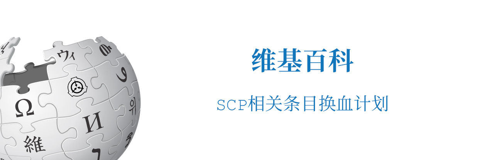

维基百科 SCP相关条目换血计划
| 进行中 |

关于换血计划
维基百科相关的SCP条目例如收容失效条目的冗余内容过多，将根据英文条目内容进行翻译，不保留任何条目已有内容
尽管计划名称仅包含“维基百科”，但多个平台的相关词条的换血计划仍在计划之内
由子悦解说发起，子悦汉化组开工实现。
条目列表
维基百科
萌娘百科
由于萌娘百科不适宜储存过多专业内容，因此只对部分已有条目进行修改
百度百科
由于百度百科的审核标准不可测，因此完成程度可能比维基百科低
- SCP - 收容失效
- Blitz Basic
- Blitz Research
- 潜渊症
- SCP: Unity